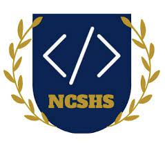

What is CSNHS??
Computer Science National Honor Society is a project for students and teachers that encourages enthusiasm for computer science and promotes academic excellence and service among high school computer science students. It offers the ability to recognize students who excel academically in computer science courses and/or demonstrate proficiency in the use of coding and programming to support their learning.

How can I join CSNHS?
You must have taken a year or more of computer science at Lamar High School with an 85 or above for each semester.
A Message From Our Sponsor: Ms. Woolweaver
I am immensely proud of the students in Lamar High School’s Computer Science National Honor Society. Their passion for computer science inspires and shines throughout our school, and is a reflection of the inquiring environment Lamar HS fosters. This website is a perfect example that showcases their creativity and drive. Students worked together to manage and design the website. They wrote and implemented the code for the site, as well as are hosting it on their own server they created. It’s amazing to see these students working together, organizing and delegating the different aspects of their projects. They are developing skills they will use beyond the classroom for the rest of their lives. Each year they also participate in an internal hackathon – as a group they develop and build a project of their own design. The first year students built a coffee vending machine that takes your order though text-messaging. Seeing the students designate roles (they created an organizational chart for teams & leads), work collaboratively, and utilize tools that are essential for their future professional careers is inspiring to witness as a teacher. These students also enjoy inspiring future generations through their mentorship work with the middle schools in Houston. My students host a mini-hackathon as well as host weekly tutoring sessions for middle school students to encourage and foster coding skills and passion. I am so proud to work with these students – they are exceptional individuals who are passionate, driven, leaders, and an absolute joy to have in my classroom.